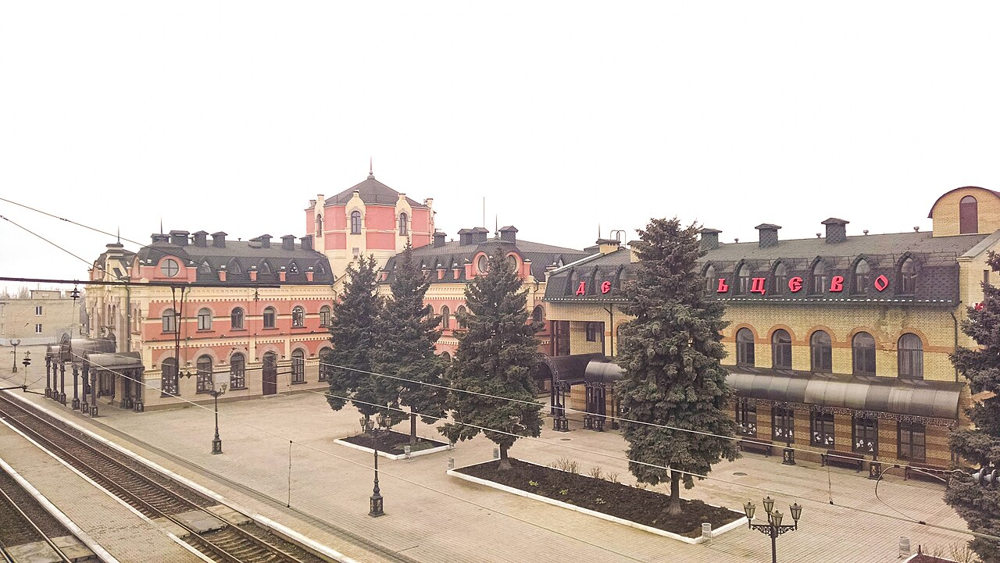
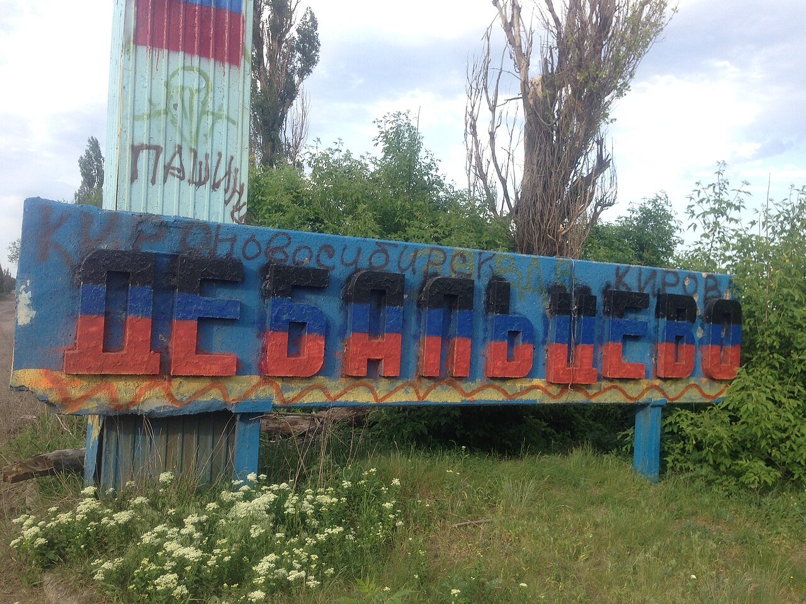
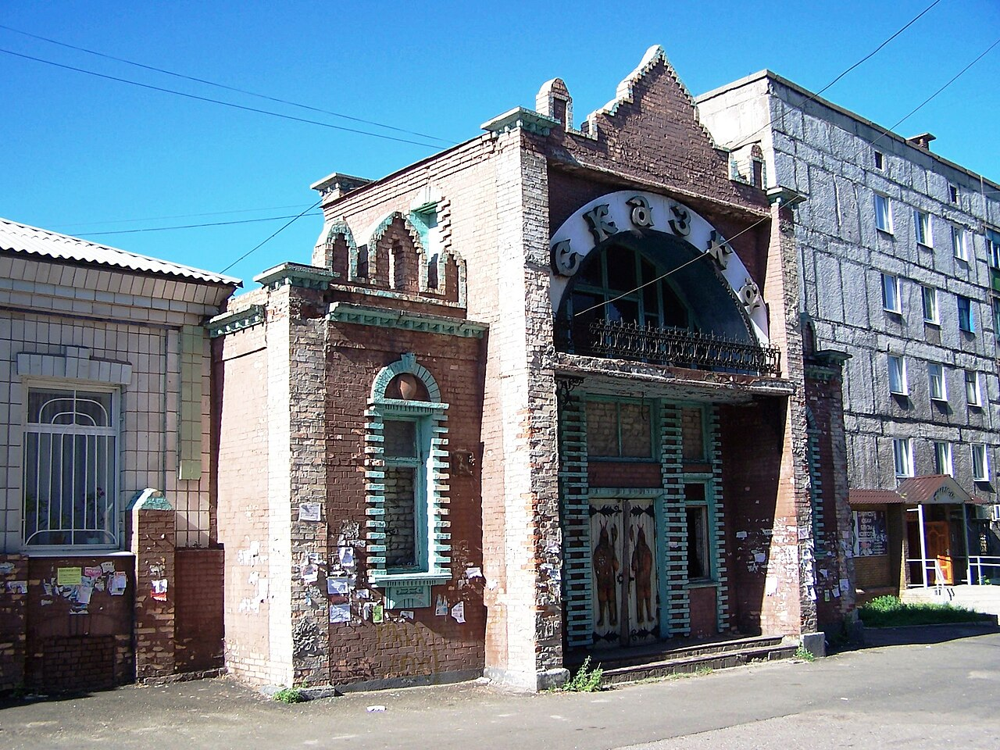
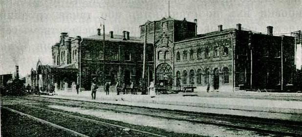
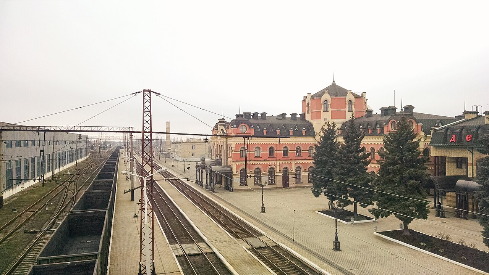

Городские службы
Ремонт электросети на улице Курчатова
В объявлении администрации сообщается о плановом отключении 27 октября с 09:00 до 14:00 по адресу: ул. Курчатова, 90.
Читать источник ↗
ДОНБАСС · ОСНОВАН В 1878 ГОДУ
От небольшой железнодорожной станции —
к городу, чья история соединила множество путей.
ЗНАКОМСТВО С ГОРОДОМ
Дебальцево выросло вокруг железной дороги. Её ритм определил облик города, его занятия и повседневную жизнь.
Город расположен на Донецком кряже, между Донецком и Луганском. Вокзал, рабочие кварталы и места памяти рассказывают о развитии транспортного узла и людях, которые его строили.
Этот сайт знакомит с историей, инфраструктурой и культурным наследием Дебальцево. Здесь важны и большие даты, и повседневные городские истории.
Культурные места города ↗ГОРОД СЕГОДНЯ
Свежие найденные публикации о городской жизни. Дата на карточке — дата публикации; подробности и изменения проверяйте в источнике.
Городские службы
В объявлении администрации сообщается о плановом отключении 27 октября с 09:00 до 14:00 по адресу: ул. Курчатова, 90.
Читать источник ↗Городская жизнь
На встрече с жителями обсудили работу управляющего участка и подготовку многоквартирных домов к зиме.
Читать источник ↗Культура
Коллектив «Родники» школы № 3 участвовал в акции «Учимся в Донбассе». Ребята представили вокальный номер.
Читать источник ↗Новости обновляются вручную. Это подборка на дату проверки, а не лента в реальном времени.
ДЕТАЛИ И МЕСТА
Архивные снимки разных лет — они показывают историю города, а не его состояние сегодня. Нажмите на фотографию, чтобы открыть её крупнее.




